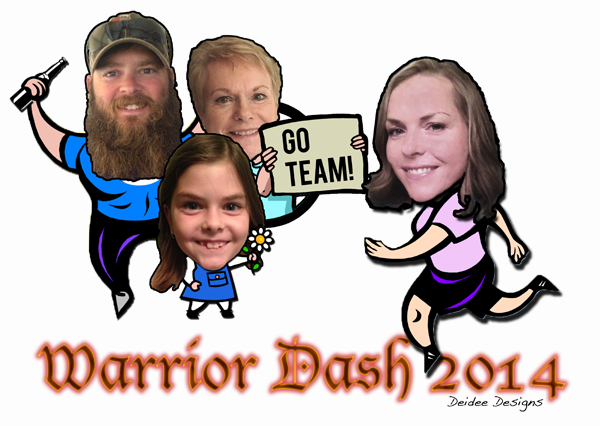
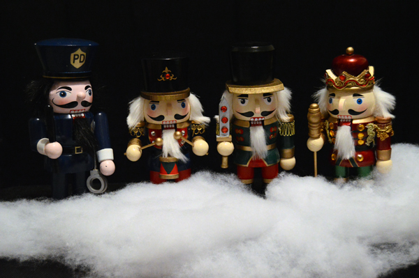
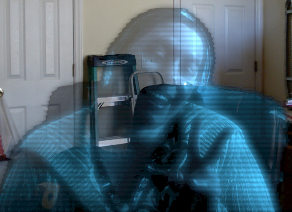

by Amy Netzel
Rollover Image
Image Placeholder
T-shirt design commissioned by a family to celebrate the Warrior Dash mud run

Four nutcracker soldiers nestled among a fuzzy snow blanket

The soldiers' memorial at Fuquay-Varina's Memorial Day Hot Air Balloon Festival
Learning new stuff in Photoshop all the time; a Star Wars inspired hologram
